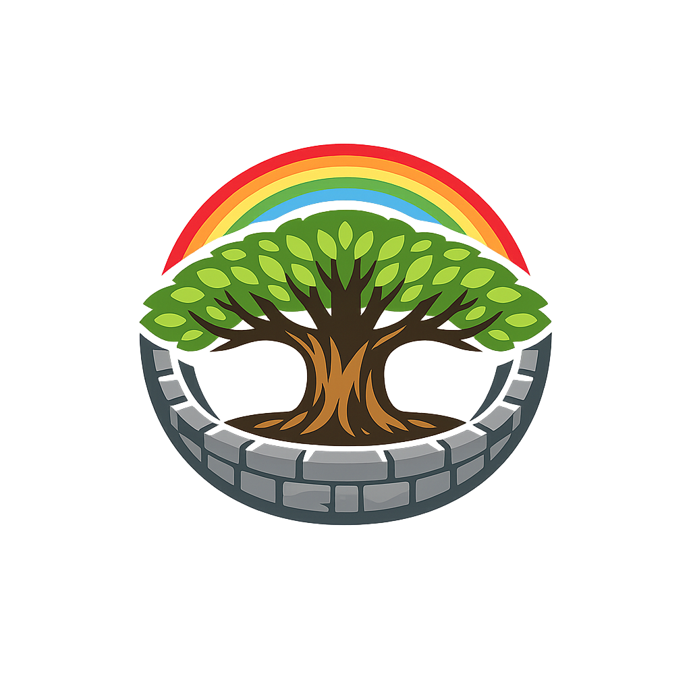

The Authentic Orthography
Middle Enclosure (Earth) · Middle enclosure (from mið + garðr)

Why Miðgarðr.com is the correct form
Miðgarðr
The name survives only in scholarly transliteration. Miðgarðr is the standard Norse romanisation, attested as middle enclosure (earth) — “Middle enclosure (from mið + garðr)”. Its original diacritics and script distinctions preserve distinctions lost in plain ASCII.
The original script for this norse name has not yet been added to PUNYCODEX. The form shown is a scholarly transliteration.
midgardr
Reduced to plain midgardr, the name loses everything that made it specific: original diacritics and script distinctions. What remains is an ASCII string that machines can parse but that no longer speaks with its original voice.
Miðgarðr
The Unicode restoration recovers what ASCII flattened. Miðgarðr restores original diacritics and script distinctions, returning the name to its original written dignity. The domain encodes to Punycode, but the browser displays the truth.
Miðgarðr.com → xn--migarr-qwad.com
The non-ASCII characters in Miðgarðr are encoded while the ASCII remains visible. To the DNS, it is Punycode. To humanity, it is Miðgarðr.
How Miðgarðr was spoken
Attributes of Miðgarðr
The grain that feeds cities, the cycle of sowing and reaping.
The overflowing horn, the sign that the earth is generous when honored.
Stories that shaped the world at the center
In the beginning, there was only Ginnungagap, the yawning void. To the north was Niflheimr, realm of ice and mist. To the south was Múspell, realm of fire. Where they met, the giant Ymir was born from the melting ice. The gods Óðinn, Vili, and Vé slew Ymir and fashioned the world from his body. His flesh became the earth — — itself. His blood became the oceans and lakes. His bones became the mountains. His teeth became the rocks. His skull became the sky, held aloft by four dwarfs at the cardinal directions. His brains became the clouds. The world of humans is literally the flesh of a giant, shaped by divine hands into a habitable realm.
A unnamed giant builder appeared at Ásgarðr and offered to build an impregnable wall around the gods' citadel in a single winter — if they would give him the sun, the moon, and the goddess Freyja as payment. The gods, confident he could not finish in time, agreed, with the condition that he work alone. But the builder had a mighty stallion, Svaðilfari, who carried stones by night. As the winter drew to a close, the wall was nearly complete. Desperate, the gods forced Loki to intervene. Loki transformed into a mare and lured Svaðilfari away. The builder, enraged, revealed his giant nature, and Þórr slew him with his hammer. From Loki and the stallion was born Sleipnir, the eight-legged horse. And the wall stood — the divine enclosure that protects the gods, just as —'s wall protects humanity.
Loki's children by the giantess Angrboða were three: the wolf Fenrir, the serpent Jörmungandr, and the goddess Hel. Óðinn, foreseeing the destruction they would bring, cast Jörmungandr into the great ocean that encircles —. There, the serpent grew until he was large enough to encircle the entire world and bite his own tail. He lies beneath the waves, his coils pressing against the shores of every land. Fishermen who catch unusual fish are sometimes said to have hooked the World Serpent. When he stirs, the seas rise. He is the boundary that keeps — together — and the force that will tear it apart.
At Ragnarök, the end of the world, Jörmungandr will release his tail and thrash in the ocean. The seas will rise and flood —, drowning the fields, the halls, and the homes of mortals. The sky will split. Fire giants will march from Múspell. The wolf Sköll will devour the sun, and Hati will devour the moon. Stars will fall from the heavens. Þórr will finally face Jörmungandr and slay him — but will take nine steps before the serpent's venom kills him. The earth will sink into the sea. And yet, from the waters, a new earth will emerge, green and fertile, where the surviving gods will gather and the world will begin again. Miðgarðr is destroyed — and reborn.
The lore you have read is the surface — the living myth. Beneath it lies the scholarship: etymology, reconstructed pronunciation, Unicode character breakdown, and the cultural legacy of Miðgarðr.
Enter Extended Lore